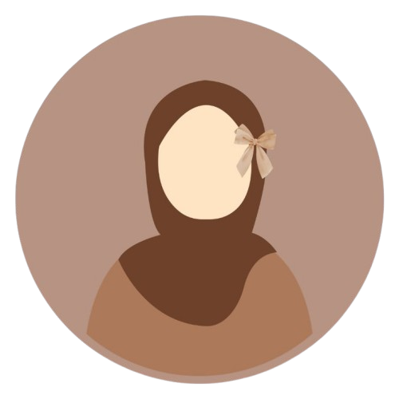

Sumaiya
Sumaiya
Dingankar
LIFELONG LEARNER
رَبِّ زِدْنِي عِلْمًا
HI!
Here’s who I am & what I do
I’m Sumaiya, a student of BCA with a deep passion for learning, reflecting, and sharing.
This little corner of the web is where I share about life lessons, Islamic reflections,
and insights from my journey as a beginner in seeking knowledge of deen.
Beyond studies, I enjoy cooking, reading, journaling, and finding beauty in simple things —
like nature, words, and quiet moments of reflection.
My goal is to keep learning, growing, and sharing thoughts that inspire kindness, faith, and purpose.
I pray that Allah ﷻ keeps us steadfast in deen and grants us hidayah to act upon the knowledge we seek.